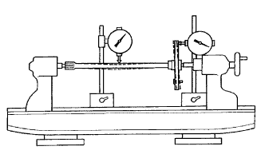

REAR AXLE SHAFT > INSPECTION
for Preparation
Click here
1. INSPECT REAR AXLE SHAFT

Using a dial indicator, measure the rear axle shaft runout and flange runout.
Maximum runout:
Shaft runout: 1.50 mm (0.0591 in.)
Flange runout: 0.05 mm (0.00197 in.)
If the rear axle shaft or flange is damaged or worn, or the runout is more than the maximum, replace the rear axle shaft.